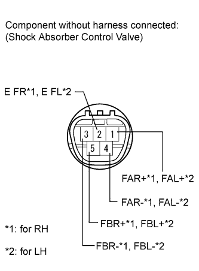
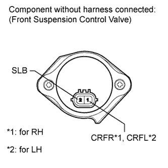

DAMPING FORCE CONTROL ACTUATOR (for Front Side) > INSPECTION |
| 1. INSPECT FRONT SHOCK ABSORBER CONTROL VALVE ASSEMBLY |
 |
Measure the resistance according to the value(s) in the table below.
| Tester Connection | Condition | Specified Condition |
| 1 (FAR+) - 2 (E FR) | Always | 12.0 to 13.6 Ω |
| 3 (FBR-) - 2 (E FR) | ||
| 4 (FAR-) - 2 (E FR) | ||
| 5 (FBR+) - 2 (E FR) |
| Tester Connection | Condition | Specified Condition |
| 1 (FAL+) - 2 (E FL) | Always | 12.0 to 13.6 Ω |
| 3 (FBL-) - 2 (E FL) | ||
| 4 (FAL-) - 2 (E FL) | ||
| 5 (FBL+) - 2 (E FL) |
| 2. INSPECT FRONT SUSPENSION CONTROL VALVE ASSEMBLY |
 |
Measure the resistance according to the value(s) in the table below.
| Tester Connection | Condition | Specified Condition |
| 1 (CRFR) - 2 (SLB) | 20°C (68°F) | 4.58 to 5.02 Ω |
| Tester Connection | Condition | Specified Condition |
| 1 (CRFL) - 2 (SLB) | 20°C (68°F) | 4.58 to 5.02 Ω |